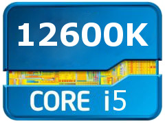

Intel’s latest 10-core i5-12600K Alder Lake desktop processor offers an
impressive 50% 64-core performance improvement over its
predecessor. The 12600K combines six hyper-threaded Golden Cove
P-cores with clock speeds up to 4.9 GHz and four energy efficient
Gracemont E-cores for a total of 16 threads. Alder Lake CPUs have a
new LGA 1700 socket which requires new cooler brackets and a new
Z690 motherboard. Z690 brings several new features including PCIe 5.0
and DDR5 memory. Most Z690 boards will ship in both DDR4 and DDR5
variants. DDR4 is likely the better option, at least until DDR5 prices
settle. With an MRSP of just $290 USD, the 12600K is both cheaper and
faster than the competition in both single and, notably, multi-core
performance. As a result, even AMD's prolific marketing infrastructure
(youtube, reddit, forums etc.) will struggle to drive sales, at least until
Zen 4 launches (est. late 2022). In the meantime, Intel's i5-12600K is
the obvious choice for consumers that do not wish to pay over the odds
for almost unparalleled performance in the majority of workloads
including gaming. That said, gamers that already own a K series CPU
from the 8th gen. or higher will see limited gains in the majority of titles
when paired with a 3060 (or lower) tier GPU. In some cases (e.g. PUBG
or Overwatch) gamers will see fewer frame drops by disabling the E
Cores all together. If recent history is a guide, stock levels at MSRP are
likely to deplete rapidly.